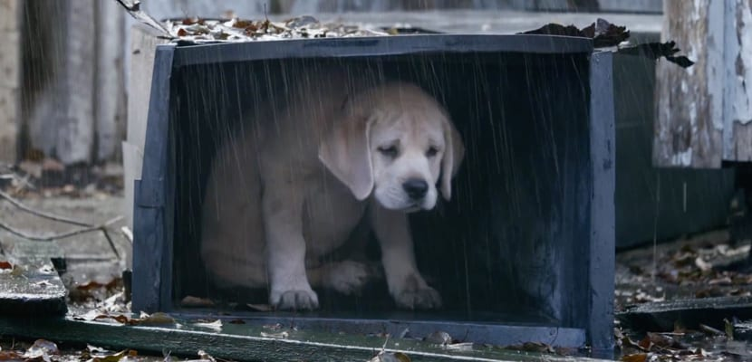
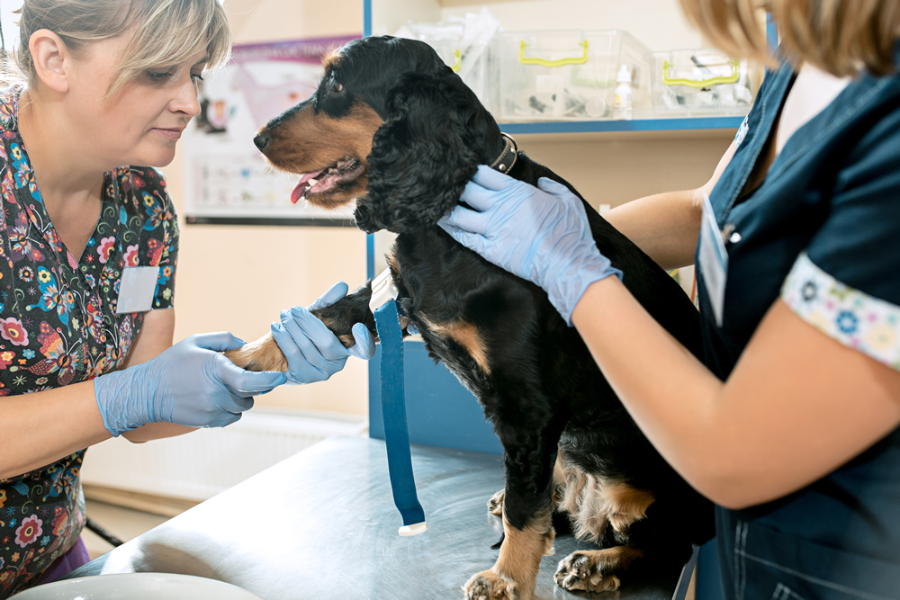

1-Rescatar
Sed sollicitudin a turpis eget commodo. Suspendisse potenti. Nullam vitae arcu porta, molestie augue et, sagittis turpis. Maecenas venenatis magna lacus, sit amet laoreet ante ullamcorper vitae. Proin turpis turpis, dapibus vel mattis convallis, tincidunt et elit. Ut blandit nisi non ante scelerisque, et malesuada odio finibus. Morbi congue euismod volutpat. Ut quis enim ac tortor pretium eleifend quis hendrerit nulla. Integer volutpat at augue sed scelerisque. Duis dignissim nisi ligula, id placerat dolor convallis vitae. Suspendisse id tempor odio, at tincidunt libero. Integer nec est metus. Vestibulum ante ipsum primis in faucibus orci luctus et ultrices posuere cubilia curae.
2-Rehabilitar
Vestibulum ante ipsum primis in faucibus orci luctus et ultrices posuere cubilia curae; Sed et ullamcorper magna, a convallis turpis. In hac habitasse platea dictumst. Donec sit amet sollicitudin leo. Class aptent taciti sociosqu ad litora torquent per conubia nostra, per inceptos himenaeos. Ut ac auctor lorem. In egestas mi sed dui interdum, id mollis quam fringilla. Ut aliquet lorem quis mi gravida rhoncus. Nunc quis commodo erat. Suspendisse volutpat posuere volutpat. Aenean non neque porta, suscipit elit id, maximus ipsum. Morbi posuere, ipsum a semper faucibus, felis ligula ullamcorper nulla, in maximus odio ex a lectus. Fusce et velit ullamcorper, tincidunt lorem et, lobortis est. Etiam at metus sit amet lectus consequat finibus. Duis congue quam ut felis facilisis vulputate. Ut vel mi cursus odio tincidunt vulputate.
3-Adoptar
 -
-
Morbi sed luctus erat. Etiam sagittis in lorem in imperdiet. Nulla eros arcu, placerat sit amet vulputate ut, interdum a eros. Sed nisi turpis, aliquet malesuada diam sit amet, gravida egestas ligula. Donec euismod rhoncus ultrices. Nunc vel lorem porttitor, mattis ex at, accumsan justo. Vestibulum vel sagittis sapien, eu tempor leo. Cras eget scelerisque quam. Maecenas libero lacus, convallis blandit urna eu, dictum ultrices nulla. Proin molestie vel orci eu egestas. Fusce porta, elit in lobortis feugiat, turpis eros mattis dolor, a semper turpis nibh sit amet lacus. Aliquam pellentesque justo purus, placerat bibendum mauris elementum a. Praesent et facilisis tellus. Nullam in arcu ipsum. Cras eget magna sit amet turpis dictum eleifend.
4-Supervisar
Morbi sed luctus erat. Etiam sagittis in lorem in imperdiet. Nulla eros arcu, placerat sit amet vulputate ut, interdum a eros. Sed nisi turpis, aliquet malesuada diam sit amet, gravida egestas ligula. Donec euismod rhoncus ultrices. Nunc vel lorem porttitor, mattis ex at, accumsan justo. Vestibulum vel sagittis sapien, eu tempor leo. Cras eget scelerisque quam. Maecenas libero lacus, convallis blandit urna eu, dictum ultrices nulla. Proin molestie vel orci eu egestas. Fusce porta, elit in lobortis feugiat, turpis eros mattis dolor, a semper turpis nibh sit amet lacus. Aliquam pellentesque justo purus, placerat bibendum mauris elementum a. Praesent et facilisis tellus. Nullam in arcu ipsum. Cras eget magna sit amet turpis dictum eleifend.